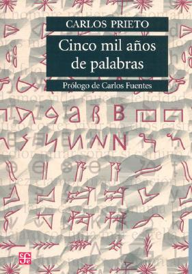

Cinco mil años de palabras: comentarios sobre el origen, evolución, muerte y resurrección de algunas lenguas
Reseña por Jorge I. Zuluaga

Ver reseña en GoodReads (necesita cuenta)
Pues "Cinco mil años de palabras" fue, finalmente, la respuesta a mi búsqueda (no es que terminé tampoco allí; seguro hay otros textos de naturaleza divulgativa similar, que leeré con placer, pero al menos este permite satisfacer mi curiosidad por ahora).
Su autor, Carlos Pietro, de origen mexicano, ingeniero, economista, músico profesional y solista de Violonchelo (¡hágame el favor!) consigue reunir en un texto de no más de 300 páginas una síntesis realmente amplia y muy entretenida, de los más de cinco mil años de historia de las familias lingüisticas más importantes del planetas y los idiomas más representativos de cada una de ellas. Con un especial énfasis, por razones obvias dado el origen hispano de su autor, en las lenguas romances, español (y otras lenguas hispana), portugués, catalán, francés (y sus variantes), italiano (y otros dialectos itálicos), entre muchas otras (¡que obviamente desconocía!). El texto, naturalmente, no se reduce a esta familia lingüistica. También aborda la historia del inglés (¡muy interesante! ¡lleno de sorpresas!), de la familia de las lenguas eslavas, las semíticas (arameo, árabe, hebreo entre otras), las sinotibetanas (entre ellas el antiguo Chino mandarín) e inclusive las familias lingüisticas de América.
Pesa bastante la ausencia de una historia del alemán y las lenguas emparentadas, a pesar de que ellan hacen su aparición como actrices de reparto en las historias del inglés, el francés, el judeo alemán y las lenguas eslavas. El autor explica en la introducción que dejo afuera las lenguas germanas por no conocerlas y para no hacer más extenso el texto, pero la verdad, al menos yo, espero que en una futura edición, las incluya.
Esta "hazaña", porque no se puede catalogar de otra manera el proyecto de escribir sobre lenguas que el autor conoce bien y otras sobre las que no, al menos sin ser un experto en filología o historiografía, permite conectar los "puntos" que a la mayoría nos parecen separados, y que unen lenguas tan diversas como el Persa, el Croata, el Hindi o el Catalán.
Una característica muy especial del libro de Carlos Prieto, es la abundante ilustración de los idiomas cuyas historias presenta. Para ello, usa ejemplos de textos reales en muchas lenguas (no todas, por supuesto). Así que, de la misma manera que lees un poema en el español de Cervantes, que es tan correcto en la lengua del cuatrocientos como en el latín de Cicerón, te encuentras con la transcripción de una entrevista del último ser humano que hablo Dálmata o algunas frases del Padre Nuestro en una decena de lenguas romances.
El libro es un tesoro de datos curiosos y perlas etimológicas. Personalmente, siempre he sentido que que hablar de la historia de las palabras es casi tan satisfactorio y placentero como hablar sobre anatomía y fisiología humanas. Es como si el descubrimiento de esas cosas (el cuerpo o la lengua) que forman el telón de fondo de la vida, despertará una curiosidad infantil en casi todos nosotros. En el caso de la "lengua", que es un órgano "extendido", difícilmente atado a unas raíces únicas o locales, la única manera de hacerlo correctamente es hablando de muchas otras lenguas y la forma en la que ella determinaron nuestra comunicación cotidiana. Es por esto que un libro, con la amplitud de "Cinco mil años de palabras", cae tan bien.
No le otorgo las 5 estrellas porque creo que la estructura y el formato del texto se asemeja, con todo el respeto por el autor y por su esfuerzo, a aquella que es propia de un trabajo de consulta realizado por un estudiante. En muchos apartes se siente como si el autor hubiera dicho, "bueno, ahora voy a hablar de esta o aquella lengua" y después de un rato de lecturas, hiciera un resumen para sus lectores. Eso no tiene nada de malo (y además es una impresión que no puedo confirmar enteramente), pero a mi personalmente me deja la impresión de un texto que no es tan original como podría serlo. Adicionalmente, el texto contiene muchas tablas, que si bien abundan en datos muy interesantes, hacen de él un libro más de consulta, que un texto para leer de corrido.
Aún con esos detalles, no dudo que todos los que, como yo, son curiosos por las lenguas y su historia, apreciaran este libro como una pequeña joya en medio de muchos otros sobre la historia de idiomas individuales o más académicos y difíciles de leer.